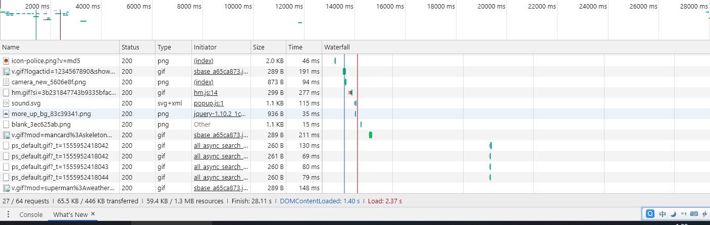

WordPress的打开速度慢会影响到用户体验和关键词的稳定排名，WordPress为什么加载慢呢？其实很简单的，就是WordPress水土不服，用WordPress的大家都知道，WordPress是外国人开发的，在国内用肯定会卡的，今天笔者给大家整理了几个解决各种WordPress慢的慢的问题，希望能够帮助到大家！

什么叫不必要的插件呢？就是能用代码解决的就用代码不用插件，不是非常需要的功能类的插件，美化网站的各种插件，常见的久这两种。
这个方法应该是大家都知道的，但是笔者还是讲一下，万一是新手看到本文。禁言谷歌的字体常见得就是代码解决和插件解决，但是如果主题是国内友人开发的一般都是自带就禁言谷歌字体了，如果主题是外国开发的，就需要禁用了。
有些网站上面是有很多很多的垃圾评论，垃圾评论是能够造成网站卡顿和服务器负载的。
压缩网页代码是包括css文件和html，js文件。
这个方法有点独特，就是屏蔽后台的比如近期评论，近期草稿还有新闻等这些东西，因为WordPress官方服务器在国外，WordPress需要加载很多国外接口信息。
优化图片缓存有很多网站都没有优化，这会影响网站的加载速度问题，优化图片缓存的方法很多，会代码的就写代码，不会的就后台安装插件吧。
自己打开你主题的文件查看，有的主题有有的主题没有，不如大前端这类的主题，就没有多余的，一般是商业主题较多。
其实很简单就是升级php的版本，目前php7.2的响应速度是php5.6的10倍以上，可想而知php的版本可以节省多少响应时间。（有些网站谨慎操作有可能导致网站无法访
上面的七个方法应该是能够解决你的WordPress慢的问题了，只要你WordPress优化好了，就算是WordPress水土不服也能够加载得很快，上面说到的压缩js，html，js文件有很多的网站都没有压缩，压缩就是就是清除主题代码中的空格之类的，压缩后的代码是没用排版的，上面七个方法都是能够有效解决WordPress慢的问题，本文小编会不定期更新，有新的解决方法了就会更新，有需要的朋友继续关本文《解决WordPress慢七种方法》。
拓展资料：《WordPress慢的八种解决方法》